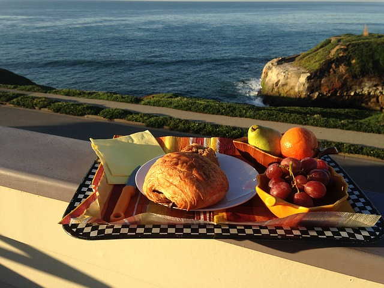
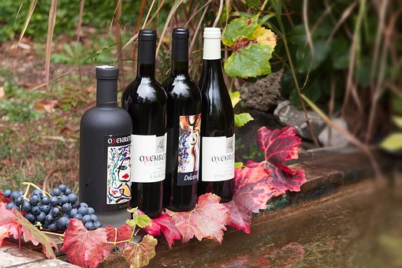

Welcome to Veronica's Cottage by the Sea
About the Cottage
Welcome to my Bed and Breakfast by the sea. My award-winning luxurious bed and breakfast is located minutes away from Mrytle Beach. The cottage has ten well appointed comfortable rooms spread across three floors and is nestled among between the sand a picturesque garden, incluidng a relaxing pond. Each room has different theme, including the The Kingston, Prince William, queen Victoria, and the Queen Mary King's Suite.
We are centrally located and mintues away from all of the main attractions the area has to offer including the world famous Mrtyle Beach, Brookgreen Gardens the Speedway. There wonderful restaturants nearby offering some of South Carolina's best in dining options.
Breakfast
Breakfast is served daily in our lovely Victorian style dining room. Guests can choose from a buffet style assortment, including pastries, crossiants, scones with clotted cream or jams. Guests may also choose our famous cook to order breakfast with fresh eggs, bacon, and toast. A selection of the finest fruits, juices, teas and coffees are always available.
Our Charming Rooms

Each of our more than ten rooms offers the finest luxurious suites. Rooms are complete with sitting rooms, gas fireplaces, jetted spa tubs. For the comfort of our guests, we provide French Regency sleeping accommodations complete with jacquered duvets, goose down blankets, and one thousand count Egyptian cotton linens.
House and Surroundings
Enjoy our restored 1800s home including a picturesque porch, gardens filled with weeping willows and beautiful fountains to keep cool on a hot summer day. The home is uniquely appointed with comfortable parlors, rooftop deck, fireplaces, a pantry area filled with complimentary beverages, desserts,fine teas, and freshly brewed coffees from the finest suppliers.